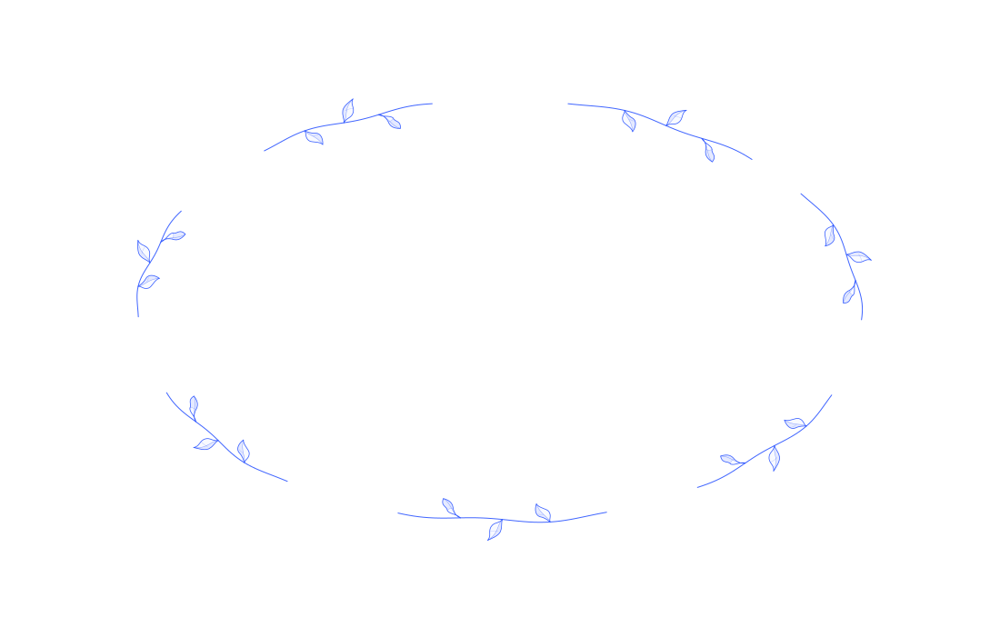

OUR WORK
The question
shapes the work.
Workflows. Data. Governance. We connect research with operating experience to turn a difficult question into work that can be tested and used.
EXPLORE THE PROJECTS ↓DISTINCT DISCIPLINES. ONE CONNECTED APPROACH.
AN ANONYMISED BANK ENGAGEMENT
A clearer picture
of delivery.
When reports disagree, more data alone does not settle the question.
A bank needed a dependable view of technology delivery across hundreds of projects. The underlying records used different definitions and told different stories.
Working with the people responsible for delivery, the team reconciled records, agreed useful measures and built the data foundations for a shared view of the work.
Read the engagement outline
The measures covered time, labour cost, disruption from changes, adherence to schedules and delivery commitments. Agreeing what each measure meant was part of the work, alongside connecting and checking the data.
The current draft records twenty weeks to a first working system with a part-time team. That is the timeline of this engagement; the illustrative project paths below show a way of working, rather than a fixed delivery timetable.
Anonymised summary from the current content draft. Wording and case detail remain for team review.
Different questions.
Different paths.
Choose a kind of project, then select a stone to explore a step. Each path loops back as we learn. These are examples of how work could unfold, shaped around your organisation.
GOVERNANCE
AI governance
Decide where judgement sits, test how AI behaves and keep the controls close to the work.

01 / Go and See
Understand the use
Follow a real use case and the people who rely on it. Establish what the system is meant to do, what can go wrong and which decisions matter.
SELECT A STONE TO EXPLORE
A working approach to oversight, evaluation and accountability.
7 STEPS / AN ITERATIVE PATHGo and See.
Build.
Adapt & Grow.
Short cycles. Work you can see. Decisions made together.
Researchers and operators work with your team throughout. Two-week sprints provide a rhythm for demonstrations, feedback and adjustment, while the engagement follows the problem.
The aim is useful work and a team equipped to continue it. Tools, knowledge and judgement stay with you.
TELL US WHAT YOU ARE WORKING ON ↗